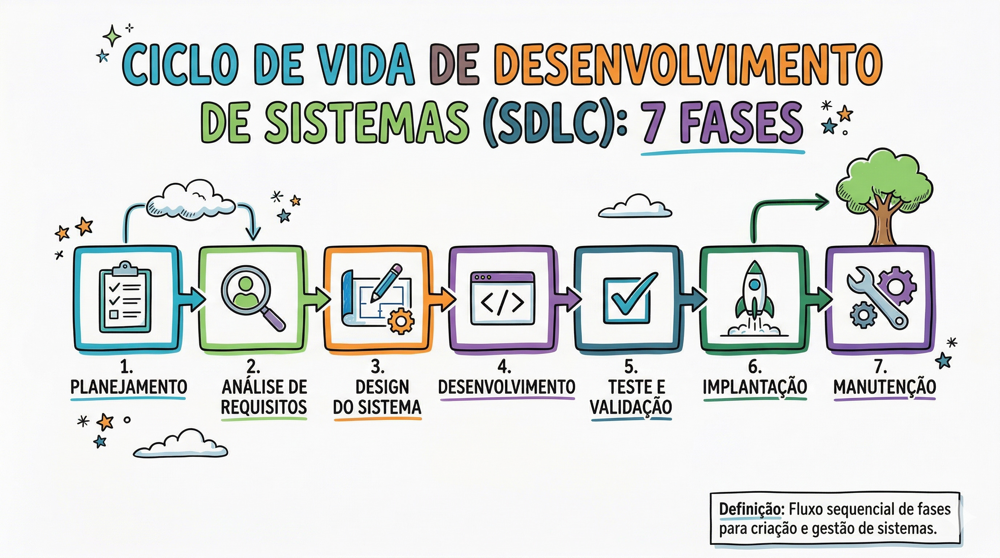
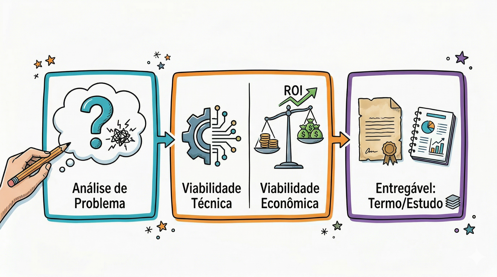
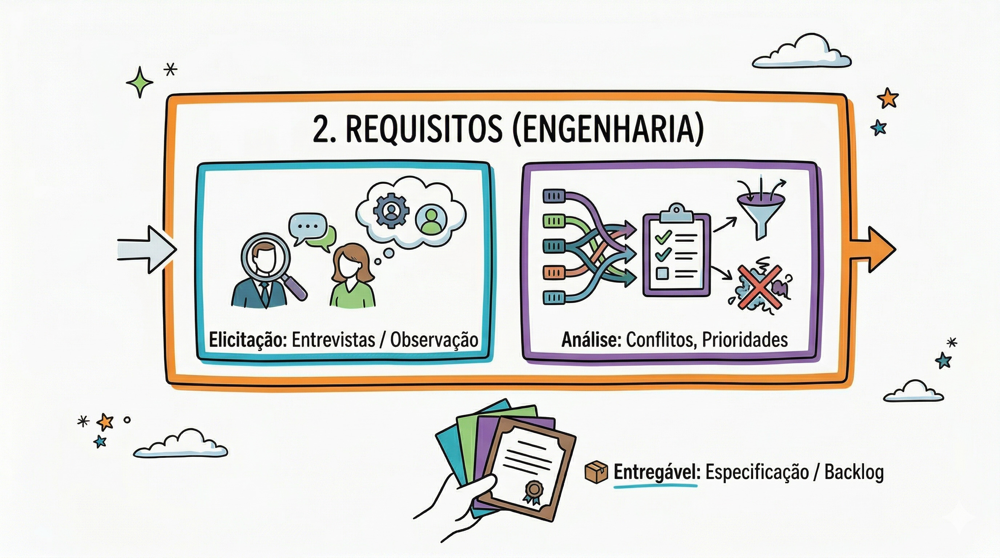
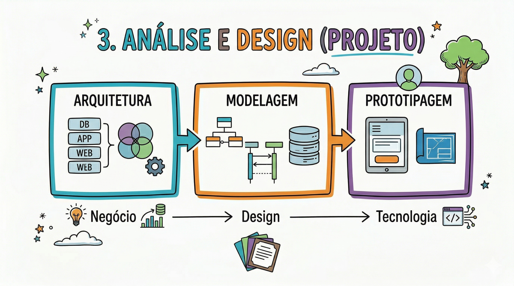
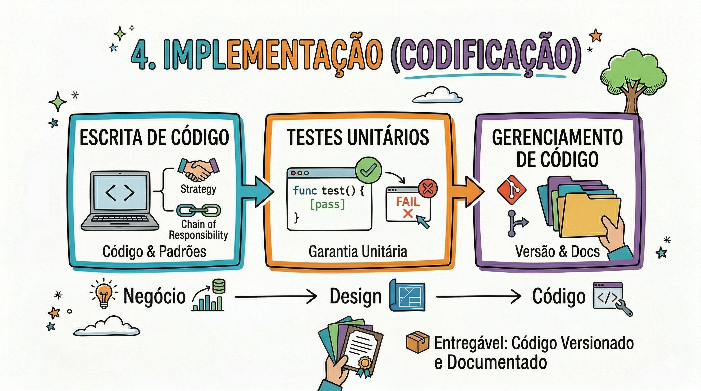
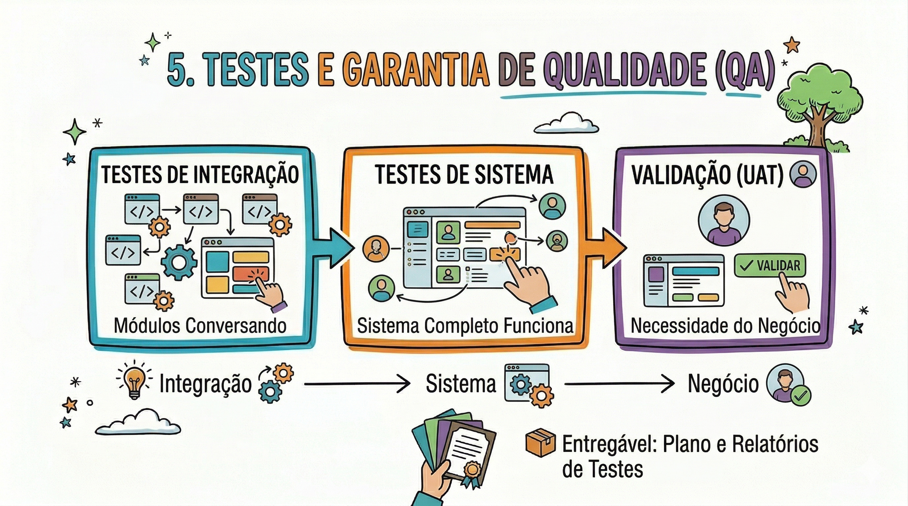
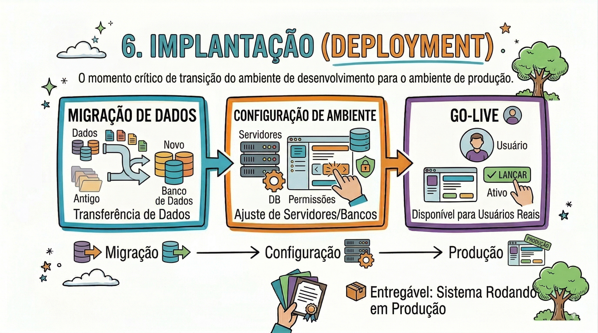
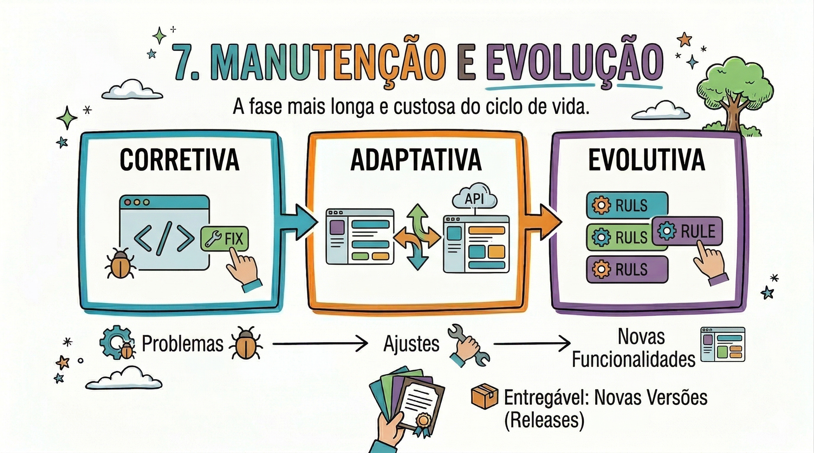

Componentes básicos e tela de Login
Entendendo a arquitetura de Views textuais, inputs interativos e formulários baseados em estado para construir a principal tela de entrada de dados de um app corporativo.
1.2: O Ciclo de Vida de Desenvolvimento de Sistemas (SDLC)
🧠 Introdução: A Disciplina da Engenharia de Software
O desenvolvimento de um Sistema de Informação não é uma atividade linear de escrita de código, mas um processo de engenharia que visa transformar uma necessidade de negócio em uma solução tecnológica funcional e sustentável.
O Ciclo de Vida (SDLC) fornece a estrutura necessária para que essa transformação ocorra com o mínimo de risco e o máximo de qualidade.
Para que um sistema seja considerado "bem construído", ele deve atravessar sete fases distintas, cada uma com seus próprios objetivos e entregáveis técnicos.
🧩 As 7 Fases do Ciclo de Vida

1. Concepção e Estudo de Viabilidade
Nesta fase inicial, o objetivo é validar se o projeto faz sentido para a organização.
Análise de Problema
Identificação do "gargalo" que o sistema deve resolver
Viabilidade Técnica e Econômica
Avalia-se se a tecnologia atual suporta a demanda e se o custo de desenvolvimento é menor que o benefício esperado (ROI)
� Entregável: Termo de Abertura ou Estudo de Viabilidade

2. Engenharia de Requisitos (Elicitação e Análise)
Esta é a base de todo o projeto. É aqui que o analista descobre o que o sistema deve fazer.
Elicitação
Uso de técnicas (entrevistas, observação) para extrair o conhecimento de negócio
Análise de Requisitos
Identificação de conflitos, ambiguidades e priorização do que é essencial
� Entregável: Documento de Especificação de Requisitos ou Backlog

3. Análise e Design (Projeto)
É a ponte entre o negócio e a tecnologia. Aqui utilizamos a UML para modelar a estrutura do software antes de codificar.
Arquitetura
Definição da stack tecnológica e padrões (ex: MVC, Microsserviços)
Modelagem
Criação de diagramas de classe, sequência e banco de dados
� Entregável: Modelos UML e Protótipos de Interface

4. Implementação (Codificação)
É a fase de tradução dos modelos e requisitos para uma linguagem de programação.
Escrita de Código
Desenvolvimento das funcionalidades seguindo os padrões de design (Design Patterns) definidos na fase anterior
Desenvolvimento de Testes Unitários
O desenvolvedor garante que cada pequena parte do seu código funciona individualmente
� Entregável: Código-fonte versionado e documentado

5. Testes e Garantia de Qualidade (QA)
Fase dedicada a encontrar falhas e garantir que o software atenda aos requisitos originais.
Testes de Integração e Sistema
Verifica se os módulos conversam entre si e se o sistema completo funciona
Validação (UAT)
O usuário final testa o sistema para confirmar se ele atende à necessidade real do negócio
� Entregável: Plano e Relatórios de Testes

6. Implantação (Deployment)
O momento crítico de transição do ambiente de desenvolvimento para o ambiente de produção.
Migração de Dados
Transferência de informações de sistemas antigos para o novo
Configuração de Ambiente
Ajuste de servidores, bancos de dados e permissões de segurança
Go-Live
O sistema torna-se disponível para os usuários reais
� Entregável: Sistema rodando em ambiente de produção

7. Manutenção e Evolução
A fase mais longa e custosa do ciclo de vida, onde o software é ajustado ao longo do tempo.
Corretiva
Correção de bugs não detectados nos testes
Adaptativa
Mudanças para que o software funcione em novos ambientes (ex: atualização de APIs externas)
Evolutiva
Implementação de novas regras de negócio para que o sistema não se torne obsoleto
� Entregável: Novas versões (releases) do sistema

📊 A Relação Custo vs. Tempo de Mudança
Um dos conceitos mais importantes para um analista é entender que a flexibilidade diminui à medida que o projeto avança.
Um erro de entendimento na fase de Engenharia de Requisitos custa apenas o tempo de reescrever um parágrafo.
O mesmo erro detectado na fase de Manutenção pode exigir a reescrita de milhares de linhas de código e a migração de milhões de registros de dados.
| Fase | Impacto Financeiro da Correção |
|---|---|
| Requisitos | Baixo (1x) |
| Design/Projeto | Moderado (3x - 5x) |
| Implementação | Alto (10x) |
| Implantação/Manutenção | Crítico (60x a 100x) |
🔁 Estratégias de Execução: Cascata vs. Iterativo
🧱 Modelo Cascata
As 7 fases ocorrem em sequência linear.
Só avançamos após a conclusão total da fase anterior.
✔️ Ideal para sistemas onde o erro não é tolerado e os requisitos são imutáveis.
🔄 Modelo Iterativo e Incremental
O projeto é dividido em ciclos curtos.
Em cada ciclo (iteração), percorremos as 7 fases para um pequeno conjunto de funcionalidades.
✔️ Permite que a Implantação ocorra em partes
✔️ Reduz risco
✔️ Gera valor mais cedo
📝 Resumo Estrutural
- Concepção: Planejar o que é possível
- Requisitos: Definir o que é necessário
- Análise/Design: Modelar como será feito
- Implementação: Construir o código
- Testes: Garantir a qualidade
- Implantação: Colocar em uso real
- Manutenção: Evoluir e corrigir
📚 Este material foi criado por Kristian Erdmann e compõe a base técnica da Unidade Curricular de Análise e Modelagem de Sistemas.